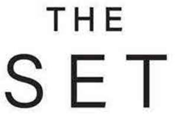

Trade Mark Journal No.2025/047 21 November 2025
UK00004290547 6 November 2025 (3,4,9,14,18,20,21,24,25,27,35)

- Class 3
- Toiletries; soaps and gels; shower gels; body wash; bubble baths; foam bath; bath preparations, not for medical purposes; talc; deodorants; antiperspirants; preparations for use in the bath or shower; lotions for the care of the hands and body; non-medicated creams, for the care of the skin; body cleaning and beauty care preparations; perfumery; perfumes; eau de toilette; body spray; aftershave; shaving preparations; shaving foam and gel, shaving balms, beard care preparations; depilatory wax and hair removal preparations; preparations for the skin; facial creams, lotions, scrubs and toners; moisturisers; beauty masks; body masks; anti-cellulite creams and gels; non-medicated lotions for suntanning; cosmetics; make-up preparations; make-up removing preparations; cosmetic preparations for eyelashes; compacts containing make-up; powder refills for make-up compacts; adhesives for cosmetic purposes; collagen for cosmetic purposes; cotton wool for cosmetic purposes; nail polish and nail polish remover; nail care preparations; nail art stickers; false nails; preparations and treatments for the hair; hair lotions; shampoos; dry shampoos; conditioners; hair gel; hair spray; room fragrancing and air freshening preparations; aromatherapy oils; reed diffusers; essential oils and aromatic extracts; computer screen cleaner.
- Class 4
- Candles, tealights and wax melts; wicks.
- Class 9
- Eyewear; spectacles; sunglasses; lenses; spectacle frames; cases for spectacles and sunglasses.
- Class 14
- Jewellery; jewellery made of or coated with precious or semi-precious metals or stones, or imitations thereof; jewellery made of or with plastics, wire, rubber, silicone, textiles, leather or wood; jewellery boxes; pouches for jewellery; watches; watch bracelets; cufflinks; tie clips; tie pins; key rings; key chains; key fobs and charms for keyrings.
- Class 18
- Leather and imitations of leather; trunks and travelling bags; umbrellas; bags; handbags; shoulder bags; suitcases; briefcases; rucksacks; wallets; purses; travelling cases; backpacks; duffel bags; bags for campers; reusable shopping bags; toilet bags; clutch bags; tote bags; key cases; toilet bags (not fitted); travelling bags; leather bags; attaché cases; satchels; beach bags; bumbags; sports bags; casual bags; beauty cases; carriers for suits, for shirts and for dresses; notecases; credit card cases and holders; messenger bags; luggage tags; vanity cases; infant and baby carriers.
- Class 20
- Furniture; garden furniture; beds; bed fittings; bed frames; bed heads and headboards; bunk beds; futons; sleeping bags and liners; beds for pets; bedding (except linen); mattresses; pillows; sofas; sofa beds; chairs; armchairs; footstools; beanbags; cushions; wardrobes; dressing tables, bedside tables; tables; bookcases; sideboards; desks; bureaux; chests of drawers; cabinets; chests; units; storage racks, storage furniture and baskets, ottomans and blanket boxes; shelves; nursery furniture; cots; travel cots; cot bumpers; babies' cradles; cribs; moses baskets; babies' baskets; high chairs for babies and infants; seats adapted for babies, infants and children; bolsters and support pillows for use in baby and child seating; baby walkers; baby bouncers (furniture); baby changing mats; baby changing platforms and tables; playpens for babies; mobiles (decoration); mirrors and frames; hand-held and compact mirrors; picture frames; cork memo boards, notice boards and pin boards; curtain poles, hooks and tie-backs; wooden and reed indoor blinds; ornaments made of wood, wicker or amber; jewellery display stands; parts and fittings for all the aforesaid goods.
- Class 21
- Tableware; plates; table plates; bowls and basins; salad bowls; soup bowls; sugar bowls; fruit bowls; pasta bowls, egg cups, jugs; serving spoons; trays; serving platters; serving bowls; serving dishes; serving ladles; lazy susans; dishes for dips; cake stands; cruet sets; glassware; wine glasses and champagne flutes; beer mugs, pint glasses; cocktail glasses; decanters; cocktail shakers and stirrers; ice buckets; corkscrews; bottle openers; straws; ice cube moulds and ice buckets; mugs, cups and saucers; teapots; tea caddies, infusers and strainers; coffee pots; non-electric coffee grinders and percolators; kitchenware; zesters; bakeware; cake tins and moulds, rolling pins, sieves and sifters; pastry, biscuit and cookie cutters, bags and nozzles for icing cakes and biscuits; ovenware; saucepans; frying pans; woks and skillets; non-electric food steamers; household or kitchen utensils and containers; food preparation utensils; mixing bowls, spoons and spatulas; non-electric mixers, beaters, blenders and whisks; spoon rests; slotted spoons; graters; colanders and strainers; chopping boards; dish drying racks; fruit and vegetable presses; tongs; fish slices; bottles sold empty; hip flasks; heat insulated containers for food and drink; lunch boxes; food and drink storage containers; spice racks and jars; bread bins and baskets; butter and cheese dishes and covers; cheese boards; oven gloves, table mats and coasters; napkin rings; kitchen and barbecue mitts; bins, litter bins; refuse bins; pedal bins; buckets; laundry bins, hampers and baskets; clothes pegs; clothes airers; bathroom accessories; towel rails and rings; toilet roll holders; soap holders and dispensers; storage caddies and containers; toothbrushes; holders and cases for toothbrushes; dental cleaning articles; toothpicks and toothpick holders; water apparatus for cleaning teeth. and gums; floss for dental purposes; portable baby baths; combs and sponges; brushes (except paint brushes); body puffs; powder puffs; shower puffs and lilies; sponges for personal care; hair brushes; nail brushes; shaving brushes; shaving brush stands; gloves for personal care purposes; loofahs; toilet cases and fitted vanity cases; cosmetics and make-up bags; cosmetic, hygiene and beauty care utensils; guasha rollers; make-up brushes, sponges and applicators; cosmetic spatulas; powder compacts; powder puffs; foam toe separators for use in pedicures; refillable empty bottles for perfumery and cosmetics purposes; perfume burners; perfume sprayers; clothes brushes; shoe horns; boot jacks; boot trees; piggy banks; money boxes; pet feeding and drinking bowls, bird feeders, bird baths; birdcages; cages and carrying baskets for pets; litter trays and litter scoops for pets; plant pots and planters; window-boxes; watering cans, nozzles and roses; sprays and misters for gardening; gardening gloves; ornaments of porcelain, ceramics, earthenware, crystal and glass; vases; candle and tealight holders, candle extinguishers; parts, fittings and accessories for the aforesaid goods.
- Class 24
- Textiles and textile goods, not included in other classes; plastic material as a substitute for fabric; upholstery fabrics; furniture coverings and loose covers of textile and plastic; cushion covers; throws; household linen; bed linen; blankets; quilts; eiderdowns, duvets and duvet covers; sheets; pillow cases; bed valances; mattress covers and pillow protectors; table linen; table cloths; table runners; table mats and place mats; coasters; napkins; tea towels; wall hangings of textile, curtains; curtain linings; curtain tie-backs; pelmets; shower curtains; bath linen, except clothing; bath mitts; towels and face cloths; textile pads for removing makeup; fitted toilet lid covers of fabric; picnic blankets; travel rugs; sleeping bag liners; textile banners, bunting and flags; diaper changing cloths for babies; handkerchiefs of textile; blankets for household pets.
- Class 25
- Hats; footwear.
- Class 27
- Floor coverings; carpets; linoleum and other materials for covering existing floors; vinyl floor coverings; floor tiles of carpet, cork or linoleum; carpet underlay; rugs; rug grippers; floor runners; mats and matting; door mats; non-slip mats; exercise mats; bath mats; non-textile wall coverings; decorative wall hangings, not of textile; wallpapers; textile wallpaper; fabric wall coverings; wallpaper borders.
- Class 35
- Provision of an on-line marketplace for buyers and sellers of goods and services; Retail services, including those services offered via physical stores, via e-commerce, online, via mobile devices and social media, via television channel, and by direct marketing and mail order catalogue, presentation of goods on communication media, for retail purposes, all connected with the sale of the following Toiletries, soaps and gels, shower gels, body wash, bubble baths, foam bath, bath preparations, not for medical purposes, talc, deodorants, antiperspirants, preparations for use in the bath or shower, lotions for the care of the hands and body, non-medicated creams, for the care of the skin, body cleaning and beauty care preparations, perfumery, perfumes, eau de toilette, body spray, aftershave, shaving preparations, shaving foam and gel, shaving balms, beard care preparations, depilatory wax and hair removal preparations, preparations for the skin, facial creams, lotions, scrubs and toners, moisturisers, beauty masks, body masks, anti-cellulite creams and gels, non-medicated lotions for suntanning, cosmetics, make-up preparations, make-up removing preparations, cosmetic preparations for eyelashes, compacts containing make-up, powder refills for make-up compacts, adhesives for cosmetic purposes, collagen for cosmetic purposes, cotton wool for cosmetic purposes, nail polish and nail polish remover, nail care preparations, nail art stickers, false nails, preparations and treatments for the hair, hair lotions, shampoos, dry shampoos, conditioners, hair gel, hair spray, room fragrancing and air freshening preparations, aromatherapy oils, reed diffusers, essential oils and aromatic extracts, computer screen cleaner, candles, tealights and wax melts, wicks, eyewear, spectacles, sunglasses, lenses, spectacle frames, cases for spectacles and sunglasses, jewellery, jewellery made of or coated with precious or semi-precious metals or stones, or imitations thereof, jewellery made of or with plastics, wire, rubber, silicone, textiles, leather or wood, jewellery boxes, pouches for jewellery, watches, watch bracelets, cufflinks, tie clips, tie pins, key rings, key chains, key fobs and charms for keyrings, leather and imitations of leather, trunks and travelling bags, umbrellas, bags, handbags, shoulder bags, suitcases, briefcases, rucksacks, wallets, purses, travelling cases, backpacks, duffel bags, bags for campers, reusable shopping bags, toilet bags, clutch bags, tote bags, key cases, toilet bags (not fitted), travelling bags, leather bags, attaché cases, satchels, beach bags, bumbags, sports bags, casual bags, beauty cases, carriers for suits, for shirts and for dresses, notecases, credit card cases and holders, messenger bags, luggage tags, vanity cases, infant and baby carriers, furniture, garden furniture, beds, bed fittings, bed frames, bed heads and headboards, bunk beds, futons, sleeping bags and liners, beds for pets, bedding (except linen), mattresses, pillows, sofas, sofa beds, chairs, armchairs, footstools, beanbags, cushions, wardrobes, dressing tables, bedside tables, tables, bookcases, sideboards, desks, bureaux, chests of drawers, cabinets, chests, units, storage racks, storage furniture and baskets, ottomans and blanket boxes, shelves, nursery furniture, cots, travel cots, cot bumpers, babies' cradles, cribs, moses baskets, babies' baskets, high chairs for babies and infants, seats adapted for babies, infants and children, bolsters and support pillows for use in baby and child seating, baby walkers, baby bouncers (furniture), baby changing mats, baby changing platforms and tables, playpens for babies, mobiles (decoration), mirrors and frames, hand-held and compact mirrors, picture frames, cork memo boards, notice boards and pin boards, curtain poles, hooks and tie-backs, wooden and reed indoor blinds, ornaments made of wood, wicker or amber, jewellery display stands, tableware, plates, table plates, bowls and basins, salad bowls, soup bowls, sugar bowls, fruit bowls, pasta bowls, egg cups, jugs, serving spoons, trays, serving platters, serving bowls, serving dishes, serving ladles, lazy susans, dishes for dips, cake stands, cruet sets, glassware, wine glasses and champagne flutes, beer mugs, pint glasses, cocktail glasses, decanters, cocktail shakers and stirrers, ice buckets, corkscrews, bottle openers, straws, ice cube moulds and ice buckets, mugs, cups and saucers, teapots, tea caddies, infusers and strainers, coffee pots, non-electric coffee grinders and percolators, kitchenware, zesters, bakeware, cake tins and moulds, rolling pins, sieves and sifters, pastry, biscuit and cookie cutters, bags and nozzles for icing cakes and biscuits, ovenware, saucepans, frying pans, woks and skillets, non-electric food steamers, household or kitchen utensils and containers, food preparation utensils, mixing bowls, spoons and spatulas, non-electric mixers, beaters, blenders and whisks, spoon rests, slotted spoons, graters, colanders and strainers, chopping boards, dish drying racks, fruit and vegetable presses, tongs, fish slices, bottles sold empty, hip flasks, heat insulated containers for food and drink, lunch boxes, food and drink storage containers, spice racks and jars, bread bins and baskets, butter and cheese dishes and covers, cheese boards, oven gloves, table mats and coasters, napkin rings, kitchen and barbecue mitts, bins, litter bins, refuse bins, pedal bins, buckets, laundry bins, hampers and baskets, clothes pegs, clothes airers, bathroom accessories, towel rails and rings, toilet roll holders, soap holders and dispensers, storage caddies and containers, toothbrushes, holders and cases for toothbrushes, dental cleaning articles, toothpicks and toothpick holders, water apparatus for cleaning teeth and gums, floss for dental purposes, portable baby baths, combs and sponges, brushes (except paint brushes), body puffs, powder puffs, shower puffs and lilies, sponges for personal care, hair brushes, nail brushes, shaving brushes, shaving brush stands, gloves for personal care purposes, loofahs, toilet cases and fitted vanity cases, cosmetics and make-up bags, cosmetic, hygiene and beauty care utensils, guasha rollers, make-up brushes, sponges and applicators, cosmetic spatulas, powder compacts, powder puffs, foam toe separators for use in pedicures, refillable empty bottles for perfumery and cosmetics purposes, perfume burners, perfume sprayers, clothes brushes, shoe horns, boot jacks, boot trees, piggy banks, money boxes, pet feeding and drinking bowls, bird feeders, bird baths, birdcages, cages and carrying baskets for pets, litter trays and litter scoops for pets, plant pots and planters, window-boxes, watering cans, nozzles and roses, sprays and misters for gardening, gardening gloves, ornaments of porcelain, ceramics, earthenware, crystal and glass, vases, candle and tealight holders, candle extinguishers, textiles and textile goods, not included in other classes, plastic material as a substitute for fabric, upholstery fabrics, furniture coverings and loose covers of textile and plastic, cushion covers, throws, household linen, bed linen, blankets, quilts, eiderdowns, duvets and duvet covers, sheets, pillow cases, bed valances, mattress covers and pillow protectors, table linen, table cloths, table runners, table mats and place mats, coasters, napkins, tea towels, wall hangings of textile, curtains, curtain linings, curtain tie-backs, pelmets, shower curtains, bath linen, except clothing, bath mitts, towels and face cloths, textile pads for removing makeup, fitted toilet lid covers of fabric, picnic blankets, travel rugs, sleeping bag liners, textile banners, bunting and flags, diaper changing cloths for babies, handkerchiefs of textile, blankets for household pets, clothing, gloves, scarves, hats, footwear, floor coverings, carpets, linoleum and other materials for covering existing floors, vinyl floor coverings, floor tiles of carpet, cork or linoleum, carpet underlay, rugs, rug grippers, floor runners, mats and matting, door mats, non-slip mats, exercise mats, bath mats, non-textile wall coverings, decorative wall hangings, not of textile, wallpapers, textile wallpaper, fabric wall coverings, wallpaper borders; operation of an online marketplace for buyers and sellers of virtual fashion goods and virtual homewares; customer enquiry, comments and complaint services; providing commercial information and product information to consumers; providing information and advice to consumers regarding the selection of products for purchase; assistance and support services provided to retail customers; demonstration of goods and services online for retail sales purposes; business administration services for processing retail sales orders; management of online orders in the retail sector; organisation, operation and management of customer loyalty schemes and services for commercial, promotional and/or advertising purposes; organisation, operation and supervision of retail sales and promotional incentive schemes.
Next Retail Limited
Representative: Marks & Clerk LLP